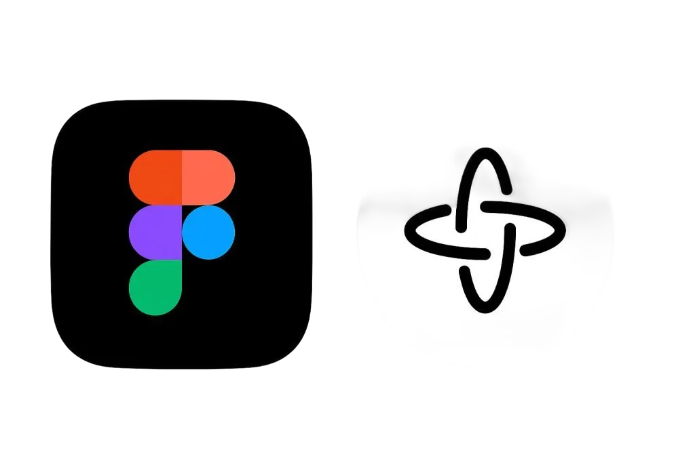

PopoverMenu component — reusable, takes items: { label, onClick }[] and onClose. Styled with the app's design language: white bg, 8px radius, soft shadow, #e5e7eb border, items in DM Sans 14px #33405e, #f5f5ff hover. Number of items is variable.